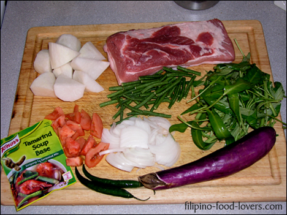
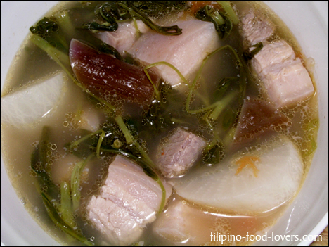
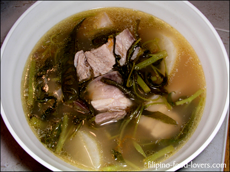

Pork Sinigang
Pork sinigang has got to be one of the most popular comfort foods in the Philippines.
I remember when my mom would prepare this dish she would use fresh tamarind.
She would boil it and squish out all the juice for the souring agent.
Thank god for the invention of the dry mix so we don’t have to do it the hard way anymore.
Not all dry mixes taste just as good as the fresh version either,
but I’m sure a lot of you out there can agree with me that when it comes to Tamarind or Sinigang mix it’s one of the most authentic ones out there.
There are other things you can use as a souring agent such as kamias, fresh mango, or ripe guava (bayabas) and don’t forget the calamansi, especially when fish is used for this dish. It is one of the most popular substitutes when it comes to tamarind.
For my version I’m going to go the easy way and use the dry mix, not to mention this is my only option since I don’t have any fresh sampalok.
So let’s get cooking!
Ingredients:
- 2 Lbs of Pork Belly cut in 2 in. cubes (Liempo)
- 1 Small radish cut in 2 in. small pieces (Labanos/Daikon)
- 1 Medium Onion sliced thinly
- 1 Small tomato diced1 Eggplant cut diagonally
- 1 Cup of Sitaw cut in 2 in. length (String Beans)
- 3 Cups of Kangkong (Water Spinach)
- 2 Pcs. Of Siling Mahaba (Finger Peppers)
- 1½ Packet of Knorr Sinigang Mix
- 1 Tsp. MSG (Vetsin)Salt to taste
- 1½ Quarts of water
Directions:
- In a large pot add water and bring to a boil. Next add pork, cover, and let it simmer for 3 minutes.
- Remove scum from the broth and then add onions, tomatoes, siling mahaba, (finger peppers) msg, (vetsin) and the sinigang mix and let cook for 10 minutes.
- Then add the Labanos, (radish) cover, and let it simmer for another 10 minutes.
- Add eggplant and cook it for an additional 10 minutes after adding the eggplant wait five minutes then add the string beans (sitaw).
- Finally add the water spinach (Kangkong) and add salt if needed. Let it cook for three more minutes and it’s ready.
- Serve with rice. Enjoy!


